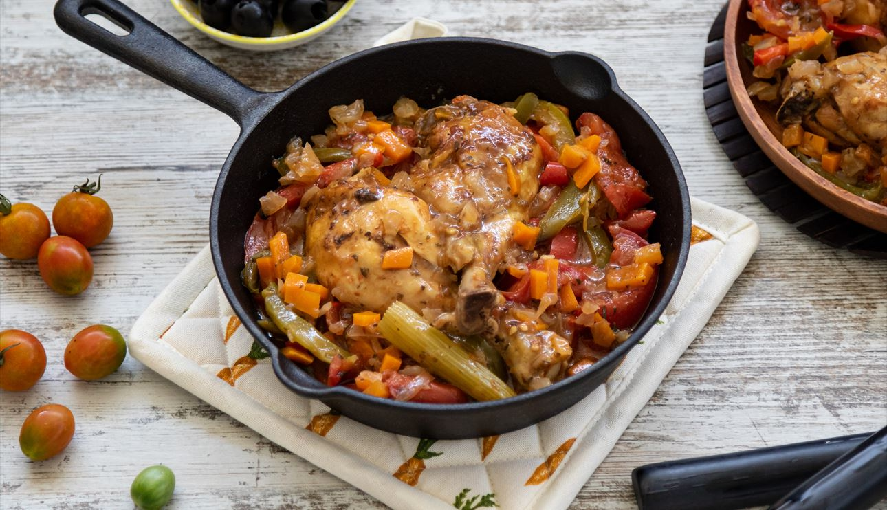
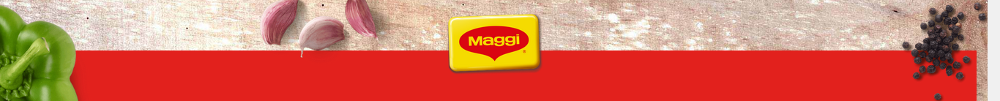

cabecera
Pollo a la cazadora

Ingredientes:
- 1 sobre de Jugoso al Horno selección de hierbas provenzales MAGGI
- 8 muslos de pollo sin piel (1,2 kg)
- 125 ml de agua
- 200 g de cebolla
- 100 g de pimiento verde
- Sal
- 100 ml de vino tinto
Elaboración:
- Precalentar el horno a 200ºC sin la bandeja de horno.
- Introducir el pollo en la bolsa especial para horno y espolvorear el contenido del sobre por encima del pollo.
- Agregar el tomate, las verduras, el apio y el vino tinto.
- Cerrar la bolsa con el cierre especial y removerlo con cuidado removiendo bien los ingredientes.
- Colocar la bolsa sobre la bandeja de horno fría. Hacer unos pequeños cortes en la parte superior de la bolsa para facilitar la salida del vapor.
- Colocar la bandeja en la parte inferior del horno, siguiendo las instrucciones del embalaje y cocerlo durante unos 60 minutos.

Si te ha gustado esta receta, te encantará:
⇽ Volver al Inicio
Footer